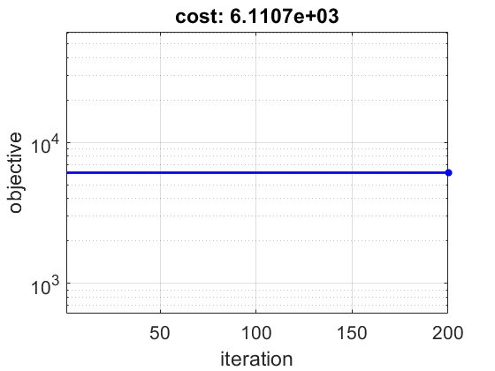

Contents
prepare workspace
clear; close all; home;
load the variables of the optimization problem
load('dataset.mat');
[m, n] = size(A);
set up the function and its gradient
stepSize = 1;
lambda = 0.02;
evaluateFunc = @(x) (1/2)*norm(A*x-b)^2;
evaluateGrad = @(x) A'*(A*x-b);
evaluate_g = @(x) lambda*norm(x,1);
evaluateGrad_g = @(y) abs(A').*sign(y);
parameters of the gradient method
xInit = zeros(n, 1);
maxIter = 200;
beta = 0.5;
phi = 0.5;
thetaPast = 1;
optimize
x = xInit;
xPast = x;
objVals = zeros(maxIter, 1);
for iter = 1:maxIter
grad = evaluateGrad(x);
xNext = x - stepSize*evaluateGrad_g(x);
funcNext = evaluateFunc(xNext);
objVals(iter) = funcNext;
fprintf('[%d/%d] [step: %.1e] [objective: %.1e] [norm(grad): %.1e]\n',...
iter, maxIter, stepSize, objVals(iter), norm(grad));
figure(1);
set(gcf, 'Color', 'w');
semilogy(1:iter, objVals(1:iter), 'b-',...
iter, objVals(iter), 'b*', 'LineWidth', 2);
grid on;
axis tight;
xlabel('iteration');
ylabel('objective');
title(sprintf('cost: %.4e', objVals(iter)));
xlim([1 maxIter]);
set(gca, 'FontSize', 16);
drawnow;
x = xNext;
end
[1/200] [step: 1.0e+00] [objective: 6.1e+03] [norm(grad): 1.2e+02]
[2/200] [step: 1.0e+00] [objective: 6.1e+03] [norm(grad): 1.0e+03]
[3/200] [step: 1.0e+00] [objective: 6.1e+03] [norm(grad): 1.0e+03]
[4/200] [step: 1.0e+00] [objective: 6.1e+03] [norm(grad): 1.0e+03]
[5/200] [step: 1.0e+00] [objective: 6.1e+03] [norm(grad): 1.0e+03]
[6/200] [step: 1.0e+00] [objective: 6.1e+03] [norm(grad): 1.0e+03]
[7/200] [step: 1.0e+00] [objective: 6.1e+03] [norm(grad): 1.0e+03]
[8/200] [step: 1.0e+00] [objective: 6.1e+03] [norm(grad): 1.0e+03]
[9/200] [step: 1.0e+00] [objective: 6.1e+03] [norm(grad): 1.0e+03]
[10/200] [step: 1.0e+00] [objective: 6.1e+03] [norm(grad): 1.0e+03]
[11/200] [step: 1.0e+00] [objective: 6.1e+03] [norm(grad): 1.0e+03]
[12/200] [step: 1.0e+00] [objective: 6.1e+03] [norm(grad): 1.0e+03]
[13/200] [step: 1.0e+00] [objective: 6.1e+03] [norm(grad): 1.0e+03]
[14/200] [step: 1.0e+00] [objective: 6.1e+03] [norm(grad): 1.0e+03]
[15/200] [step: 1.0e+00] [objective: 6.1e+03] [norm(grad): 1.0e+03]
[16/200] [step: 1.0e+00] [objective: 6.1e+03] [norm(grad): 1.0e+03]
[17/200] [step: 1.0e+00] [objective: 6.1e+03] [norm(grad): 1.0e+03]
[18/200] [step: 1.0e+00] [objective: 6.1e+03] [norm(grad): 1.0e+03]
[19/200] [step: 1.0e+00] [objective: 6.1e+03] [norm(grad): 1.0e+03]
[20/200] [step: 1.0e+00] [objective: 6.1e+03] [norm(grad): 1.0e+03]
[21/200] [step: 1.0e+00] [objective: 6.1e+03] [norm(grad): 1.0e+03]
[22/200] [step: 1.0e+00] [objective: 6.1e+03] [norm(grad): 1.0e+03]
[23/200] [step: 1.0e+00] [objective: 6.1e+03] [norm(grad): 1.0e+03]
[24/200] [step: 1.0e+00] [objective: 6.1e+03] [norm(grad): 1.0e+03]
[25/200] [step: 1.0e+00] [objective: 6.1e+03] [norm(grad): 1.0e+03]
[26/200] [step: 1.0e+00] [objective: 6.1e+03] [norm(grad): 1.0e+03]
[27/200] [step: 1.0e+00] [objective: 6.1e+03] [norm(grad): 1.0e+03]
[28/200] [step: 1.0e+00] [objective: 6.1e+03] [norm(grad): 1.0e+03]
[29/200] [step: 1.0e+00] [objective: 6.1e+03] [norm(grad): 1.0e+03]
[30/200] [step: 1.0e+00] [objective: 6.1e+03] [norm(grad): 1.0e+03]
[31/200] [step: 1.0e+00] [objective: 6.1e+03] [norm(grad): 1.0e+03]
[32/200] [step: 1.0e+00] [objective: 6.1e+03] [norm(grad): 1.0e+03]
[33/200] [step: 1.0e+00] [objective: 6.1e+03] [norm(grad): 1.0e+03]
[34/200] [step: 1.0e+00] [objective: 6.1e+03] [norm(grad): 1.0e+03]
[35/200] [step: 1.0e+00] [objective: 6.1e+03] [norm(grad): 1.0e+03]
[36/200] [step: 1.0e+00] [objective: 6.1e+03] [norm(grad): 1.0e+03]
[37/200] [step: 1.0e+00] [objective: 6.1e+03] [norm(grad): 1.0e+03]
[38/200] [step: 1.0e+00] [objective: 6.1e+03] [norm(grad): 1.0e+03]
[39/200] [step: 1.0e+00] [objective: 6.1e+03] [norm(grad): 1.0e+03]
[40/200] [step: 1.0e+00] [objective: 6.1e+03] [norm(grad): 1.0e+03]
[41/200] [step: 1.0e+00] [objective: 6.1e+03] [norm(grad): 1.0e+03]
[42/200] [step: 1.0e+00] [objective: 6.1e+03] [norm(grad): 1.0e+03]
[43/200] [step: 1.0e+00] [objective: 6.1e+03] [norm(grad): 1.0e+03]
[44/200] [step: 1.0e+00] [objective: 6.1e+03] [norm(grad): 1.0e+03]
[45/200] [step: 1.0e+00] [objective: 6.1e+03] [norm(grad): 1.0e+03]
[46/200] [step: 1.0e+00] [objective: 6.1e+03] [norm(grad): 1.0e+03]
[47/200] [step: 1.0e+00] [objective: 6.1e+03] [norm(grad): 1.0e+03]
[48/200] [step: 1.0e+00] [objective: 6.1e+03] [norm(grad): 1.0e+03]
[49/200] [step: 1.0e+00] [objective: 6.1e+03] [norm(grad): 1.0e+03]
[50/200] [step: 1.0e+00] [objective: 6.1e+03] [norm(grad): 1.0e+03]
[51/200] [step: 1.0e+00] [objective: 6.1e+03] [norm(grad): 1.0e+03]
[52/200] [step: 1.0e+00] [objective: 6.1e+03] [norm(grad): 1.0e+03]
[53/200] [step: 1.0e+00] [objective: 6.1e+03] [norm(grad): 1.0e+03]
[54/200] [step: 1.0e+00] [objective: 6.1e+03] [norm(grad): 1.0e+03]
[55/200] [step: 1.0e+00] [objective: 6.1e+03] [norm(grad): 1.0e+03]
[56/200] [step: 1.0e+00] [objective: 6.1e+03] [norm(grad): 1.0e+03]
[57/200] [step: 1.0e+00] [objective: 6.1e+03] [norm(grad): 1.0e+03]
[58/200] [step: 1.0e+00] [objective: 6.1e+03] [norm(grad): 1.0e+03]
[59/200] [step: 1.0e+00] [objective: 6.1e+03] [norm(grad): 1.0e+03]
[60/200] [step: 1.0e+00] [objective: 6.1e+03] [norm(grad): 1.0e+03]
[61/200] [step: 1.0e+00] [objective: 6.1e+03] [norm(grad): 1.0e+03]
[62/200] [step: 1.0e+00] [objective: 6.1e+03] [norm(grad): 1.0e+03]
[63/200] [step: 1.0e+00] [objective: 6.1e+03] [norm(grad): 1.0e+03]
[64/200] [step: 1.0e+00] [objective: 6.1e+03] [norm(grad): 1.0e+03]
[65/200] [step: 1.0e+00] [objective: 6.1e+03] [norm(grad): 1.0e+03]
[66/200] [step: 1.0e+00] [objective: 6.1e+03] [norm(grad): 1.0e+03]
[67/200] [step: 1.0e+00] [objective: 6.1e+03] [norm(grad): 1.0e+03]
[68/200] [step: 1.0e+00] [objective: 6.1e+03] [norm(grad): 1.0e+03]
[69/200] [step: 1.0e+00] [objective: 6.1e+03] [norm(grad): 1.0e+03]
[70/200] [step: 1.0e+00] [objective: 6.1e+03] [norm(grad): 1.0e+03]
[71/200] [step: 1.0e+00] [objective: 6.1e+03] [norm(grad): 1.0e+03]
[72/200] [step: 1.0e+00] [objective: 6.1e+03] [norm(grad): 1.0e+03]
[73/200] [step: 1.0e+00] [objective: 6.1e+03] [norm(grad): 1.0e+03]
[74/200] [step: 1.0e+00] [objective: 6.1e+03] [norm(grad): 1.0e+03]
[75/200] [step: 1.0e+00] [objective: 6.1e+03] [norm(grad): 1.0e+03]
[76/200] [step: 1.0e+00] [objective: 6.1e+03] [norm(grad): 1.0e+03]
[77/200] [step: 1.0e+00] [objective: 6.1e+03] [norm(grad): 1.0e+03]
[78/200] [step: 1.0e+00] [objective: 6.1e+03] [norm(grad): 1.0e+03]
[79/200] [step: 1.0e+00] [objective: 6.1e+03] [norm(grad): 1.0e+03]
[80/200] [step: 1.0e+00] [objective: 6.1e+03] [norm(grad): 1.0e+03]
[81/200] [step: 1.0e+00] [objective: 6.1e+03] [norm(grad): 1.0e+03]
[82/200] [step: 1.0e+00] [objective: 6.1e+03] [norm(grad): 1.0e+03]
[83/200] [step: 1.0e+00] [objective: 6.1e+03] [norm(grad): 1.0e+03]
[84/200] [step: 1.0e+00] [objective: 6.1e+03] [norm(grad): 1.0e+03]
[85/200] [step: 1.0e+00] [objective: 6.1e+03] [norm(grad): 1.0e+03]
[86/200] [step: 1.0e+00] [objective: 6.1e+03] [norm(grad): 1.0e+03]
[87/200] [step: 1.0e+00] [objective: 6.1e+03] [norm(grad): 1.0e+03]
[88/200] [step: 1.0e+00] [objective: 6.1e+03] [norm(grad): 1.0e+03]
[89/200] [step: 1.0e+00] [objective: 6.1e+03] [norm(grad): 1.0e+03]
[90/200] [step: 1.0e+00] [objective: 6.1e+03] [norm(grad): 1.0e+03]
[91/200] [step: 1.0e+00] [objective: 6.1e+03] [norm(grad): 1.0e+03]
[92/200] [step: 1.0e+00] [objective: 6.1e+03] [norm(grad): 1.0e+03]
[93/200] [step: 1.0e+00] [objective: 6.1e+03] [norm(grad): 1.0e+03]
[94/200] [step: 1.0e+00] [objective: 6.1e+03] [norm(grad): 1.0e+03]
[95/200] [step: 1.0e+00] [objective: 6.1e+03] [norm(grad): 1.0e+03]
[96/200] [step: 1.0e+00] [objective: 6.1e+03] [norm(grad): 1.0e+03]
[97/200] [step: 1.0e+00] [objective: 6.1e+03] [norm(grad): 1.0e+03]
[98/200] [step: 1.0e+00] [objective: 6.1e+03] [norm(grad): 1.0e+03]
[99/200] [step: 1.0e+00] [objective: 6.1e+03] [norm(grad): 1.0e+03]
[100/200] [step: 1.0e+00] [objective: 6.1e+03] [norm(grad): 1.0e+03]
[101/200] [step: 1.0e+00] [objective: 6.1e+03] [norm(grad): 1.0e+03]
[102/200] [step: 1.0e+00] [objective: 6.1e+03] [norm(grad): 1.0e+03]
[103/200] [step: 1.0e+00] [objective: 6.1e+03] [norm(grad): 1.0e+03]
[104/200] [step: 1.0e+00] [objective: 6.1e+03] [norm(grad): 1.0e+03]
[105/200] [step: 1.0e+00] [objective: 6.1e+03] [norm(grad): 1.0e+03]
[106/200] [step: 1.0e+00] [objective: 6.1e+03] [norm(grad): 1.0e+03]
[107/200] [step: 1.0e+00] [objective: 6.1e+03] [norm(grad): 1.0e+03]
[108/200] [step: 1.0e+00] [objective: 6.1e+03] [norm(grad): 1.0e+03]
[109/200] [step: 1.0e+00] [objective: 6.1e+03] [norm(grad): 1.0e+03]
[110/200] [step: 1.0e+00] [objective: 6.1e+03] [norm(grad): 1.0e+03]
[111/200] [step: 1.0e+00] [objective: 6.1e+03] [norm(grad): 1.0e+03]
[112/200] [step: 1.0e+00] [objective: 6.1e+03] [norm(grad): 1.0e+03]
[113/200] [step: 1.0e+00] [objective: 6.1e+03] [norm(grad): 1.0e+03]
[114/200] [step: 1.0e+00] [objective: 6.1e+03] [norm(grad): 1.0e+03]
[115/200] [step: 1.0e+00] [objective: 6.1e+03] [norm(grad): 1.0e+03]
[116/200] [step: 1.0e+00] [objective: 6.1e+03] [norm(grad): 1.0e+03]
[117/200] [step: 1.0e+00] [objective: 6.1e+03] [norm(grad): 1.0e+03]
[118/200] [step: 1.0e+00] [objective: 6.1e+03] [norm(grad): 1.0e+03]
[119/200] [step: 1.0e+00] [objective: 6.1e+03] [norm(grad): 1.0e+03]
[120/200] [step: 1.0e+00] [objective: 6.1e+03] [norm(grad): 1.0e+03]
[121/200] [step: 1.0e+00] [objective: 6.1e+03] [norm(grad): 1.0e+03]
[122/200] [step: 1.0e+00] [objective: 6.1e+03] [norm(grad): 1.0e+03]
[123/200] [step: 1.0e+00] [objective: 6.1e+03] [norm(grad): 1.0e+03]
[124/200] [step: 1.0e+00] [objective: 6.1e+03] [norm(grad): 1.0e+03]
[125/200] [step: 1.0e+00] [objective: 6.1e+03] [norm(grad): 1.0e+03]
[126/200] [step: 1.0e+00] [objective: 6.1e+03] [norm(grad): 1.0e+03]
[127/200] [step: 1.0e+00] [objective: 6.1e+03] [norm(grad): 1.0e+03]
[128/200] [step: 1.0e+00] [objective: 6.1e+03] [norm(grad): 1.0e+03]
[129/200] [step: 1.0e+00] [objective: 6.1e+03] [norm(grad): 1.0e+03]
[130/200] [step: 1.0e+00] [objective: 6.1e+03] [norm(grad): 1.0e+03]
[131/200] [step: 1.0e+00] [objective: 6.1e+03] [norm(grad): 1.0e+03]
[132/200] [step: 1.0e+00] [objective: 6.1e+03] [norm(grad): 1.0e+03]
[133/200] [step: 1.0e+00] [objective: 6.1e+03] [norm(grad): 1.0e+03]
[134/200] [step: 1.0e+00] [objective: 6.1e+03] [norm(grad): 1.0e+03]
[135/200] [step: 1.0e+00] [objective: 6.1e+03] [norm(grad): 1.0e+03]
[136/200] [step: 1.0e+00] [objective: 6.1e+03] [norm(grad): 1.0e+03]
[137/200] [step: 1.0e+00] [objective: 6.1e+03] [norm(grad): 1.0e+03]
[138/200] [step: 1.0e+00] [objective: 6.1e+03] [norm(grad): 1.0e+03]
[139/200] [step: 1.0e+00] [objective: 6.1e+03] [norm(grad): 1.0e+03]
[140/200] [step: 1.0e+00] [objective: 6.1e+03] [norm(grad): 1.0e+03]
[141/200] [step: 1.0e+00] [objective: 6.1e+03] [norm(grad): 1.0e+03]
[142/200] [step: 1.0e+00] [objective: 6.1e+03] [norm(grad): 1.0e+03]
[143/200] [step: 1.0e+00] [objective: 6.1e+03] [norm(grad): 1.0e+03]
[144/200] [step: 1.0e+00] [objective: 6.1e+03] [norm(grad): 1.0e+03]
[145/200] [step: 1.0e+00] [objective: 6.1e+03] [norm(grad): 1.0e+03]
[146/200] [step: 1.0e+00] [objective: 6.1e+03] [norm(grad): 1.0e+03]
[147/200] [step: 1.0e+00] [objective: 6.1e+03] [norm(grad): 1.0e+03]
[148/200] [step: 1.0e+00] [objective: 6.1e+03] [norm(grad): 1.0e+03]
[149/200] [step: 1.0e+00] [objective: 6.1e+03] [norm(grad): 1.0e+03]
[150/200] [step: 1.0e+00] [objective: 6.1e+03] [norm(grad): 1.0e+03]
[151/200] [step: 1.0e+00] [objective: 6.1e+03] [norm(grad): 1.0e+03]
[152/200] [step: 1.0e+00] [objective: 6.1e+03] [norm(grad): 1.0e+03]
[153/200] [step: 1.0e+00] [objective: 6.1e+03] [norm(grad): 1.0e+03]
[154/200] [step: 1.0e+00] [objective: 6.1e+03] [norm(grad): 1.0e+03]
[155/200] [step: 1.0e+00] [objective: 6.1e+03] [norm(grad): 1.0e+03]
[156/200] [step: 1.0e+00] [objective: 6.1e+03] [norm(grad): 1.0e+03]
[157/200] [step: 1.0e+00] [objective: 6.1e+03] [norm(grad): 1.0e+03]
[158/200] [step: 1.0e+00] [objective: 6.1e+03] [norm(grad): 1.0e+03]
[159/200] [step: 1.0e+00] [objective: 6.1e+03] [norm(grad): 1.0e+03]
[160/200] [step: 1.0e+00] [objective: 6.1e+03] [norm(grad): 1.0e+03]
[161/200] [step: 1.0e+00] [objective: 6.1e+03] [norm(grad): 1.0e+03]
[162/200] [step: 1.0e+00] [objective: 6.1e+03] [norm(grad): 1.0e+03]
[163/200] [step: 1.0e+00] [objective: 6.1e+03] [norm(grad): 1.0e+03]
[164/200] [step: 1.0e+00] [objective: 6.1e+03] [norm(grad): 1.0e+03]
[165/200] [step: 1.0e+00] [objective: 6.1e+03] [norm(grad): 1.0e+03]
[166/200] [step: 1.0e+00] [objective: 6.1e+03] [norm(grad): 1.0e+03]
[167/200] [step: 1.0e+00] [objective: 6.1e+03] [norm(grad): 1.0e+03]
[168/200] [step: 1.0e+00] [objective: 6.1e+03] [norm(grad): 1.0e+03]
[169/200] [step: 1.0e+00] [objective: 6.1e+03] [norm(grad): 1.0e+03]
[170/200] [step: 1.0e+00] [objective: 6.1e+03] [norm(grad): 1.0e+03]
[171/200] [step: 1.0e+00] [objective: 6.1e+03] [norm(grad): 1.0e+03]
[172/200] [step: 1.0e+00] [objective: 6.1e+03] [norm(grad): 1.0e+03]
[173/200] [step: 1.0e+00] [objective: 6.1e+03] [norm(grad): 1.0e+03]
[174/200] [step: 1.0e+00] [objective: 6.1e+03] [norm(grad): 1.0e+03]
[175/200] [step: 1.0e+00] [objective: 6.1e+03] [norm(grad): 1.0e+03]
[176/200] [step: 1.0e+00] [objective: 6.1e+03] [norm(grad): 1.0e+03]
[177/200] [step: 1.0e+00] [objective: 6.1e+03] [norm(grad): 1.0e+03]
[178/200] [step: 1.0e+00] [objective: 6.1e+03] [norm(grad): 1.0e+03]
[179/200] [step: 1.0e+00] [objective: 6.1e+03] [norm(grad): 1.0e+03]
[180/200] [step: 1.0e+00] [objective: 6.1e+03] [norm(grad): 1.0e+03]
[181/200] [step: 1.0e+00] [objective: 6.1e+03] [norm(grad): 1.0e+03]
[182/200] [step: 1.0e+00] [objective: 6.1e+03] [norm(grad): 1.0e+03]
[183/200] [step: 1.0e+00] [objective: 6.1e+03] [norm(grad): 1.0e+03]
[184/200] [step: 1.0e+00] [objective: 6.1e+03] [norm(grad): 1.0e+03]
[185/200] [step: 1.0e+00] [objective: 6.1e+03] [norm(grad): 1.0e+03]
[186/200] [step: 1.0e+00] [objective: 6.1e+03] [norm(grad): 1.0e+03]
[187/200] [step: 1.0e+00] [objective: 6.1e+03] [norm(grad): 1.0e+03]
[188/200] [step: 1.0e+00] [objective: 6.1e+03] [norm(grad): 1.0e+03]
[189/200] [step: 1.0e+00] [objective: 6.1e+03] [norm(grad): 1.0e+03]
[190/200] [step: 1.0e+00] [objective: 6.1e+03] [norm(grad): 1.0e+03]
[191/200] [step: 1.0e+00] [objective: 6.1e+03] [norm(grad): 1.0e+03]
[192/200] [step: 1.0e+00] [objective: 6.1e+03] [norm(grad): 1.0e+03]
[193/200] [step: 1.0e+00] [objective: 6.1e+03] [norm(grad): 1.0e+03]
[194/200] [step: 1.0e+00] [objective: 6.1e+03] [norm(grad): 1.0e+03]
[195/200] [step: 1.0e+00] [objective: 6.1e+03] [norm(grad): 1.0e+03]
[196/200] [step: 1.0e+00] [objective: 6.1e+03] [norm(grad): 1.0e+03]
[197/200] [step: 1.0e+00] [objective: 6.1e+03] [norm(grad): 1.0e+03]
[198/200] [step: 1.0e+00] [objective: 6.1e+03] [norm(grad): 1.0e+03]
[199/200] [step: 1.0e+00] [objective: 6.1e+03] [norm(grad): 1.0e+03]
[200/200] [step: 1.0e+00] [objective: 6.1e+03] [norm(grad): 1.0e+03]
